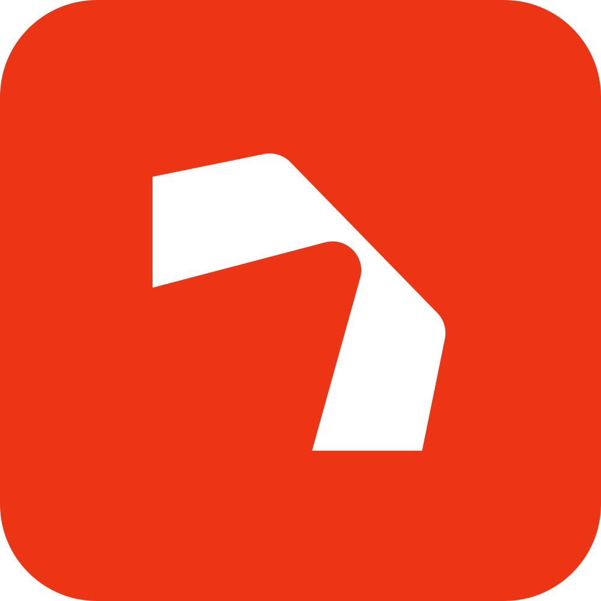
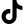
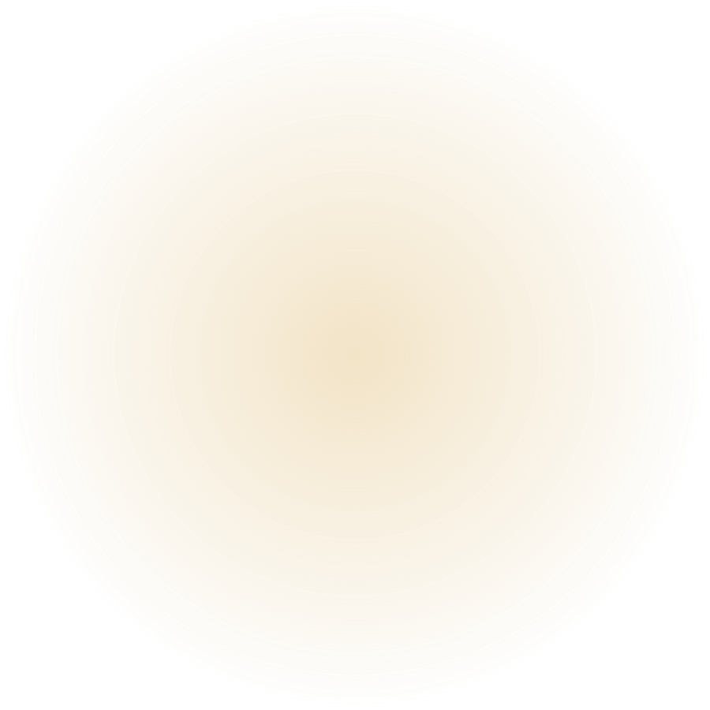
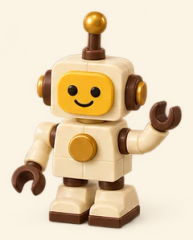

Когда браться: часть 1 после урока 2.2, когда подключён Zernio. Часть 2 можно начать сразу после урока 1.5: выкладываете ролики сами, цифры через 48 часов переписываете из статистики Instagram и присылаете агенту.
Результатодин ролик выходит в Instagram, TikTok и YouTube, а время выкладки вы выбираете по своим цифрам.
Часть 1. TikTok и YouTube через Zernio
ролик

Zernio
Instagram

TikTok
YouTube
Что делаете вы
1В Zernio откройте Connections (Подключения) и войдите в TikTok и YouTube так же, как в Instagram.
2Скажите автоматизатору: «Выкладывай ролики ещё в TikTok и YouTube».

Сколько стоит
TikTok и YouTube это 2 новых аккаунта в Zernio. Бесплатны только первые 2 аккаунта, каждый следующий 6 долларов в месяц, нужна карта. Пример: Instagram, TikTok и YouTube это 3 аккаунта, 6 долларов в месяц.
Через Zernio ролик выходит только для всех. Хотите выложить ролик не для всех: выложите его в приложении TikTok сами. Не больше 15 роликов в сутки.
YouTube
Вертикальный ролик до 3 минут становится Shorts, это короткие видео YouTube, как рилсы. Свою обложку для Shorts через Zernio не поставить, только в YouTube Studio (кабинет автора на сайте YouTube).
ИИМетка ИИ
Если в ролике сгенерированные фон, предметы или голос выглядят как настоящие, нужна метка ИИ. В Instagram и YouTube её ставит агент при публикации. В TikTok агент ставит её только для аккаунта TikTok Business, иначе отметьте в приложении сами.
Часть 2. Как найти своё лучшее время
Слот это время выкладки, например 20:00. Универсального лучшего часа нет: у каждого блога своя аудитория. Нужны 2 недели и ваши цифры.
1Выберите главный часовой пояс аудитории. В Москве на 2 часа меньше: 20:00 в Алматы это 18:00 в Москве.
2Утвердите 3 слота, например 12:00, 20:00 и 23:00. За 2 недели каждый получит 4–5 роликов, и в будни, и в выходные. Хотите 5 слотов: эксперимент длится 3 недели.
3Выкладывайте по ролику в день, меняя слот по кругу.
4Через 2 недели попросите агента сравнить слоты.
5Оставьте 1–2 лучших. Через месяц повторите: победитель плюс один новый слот.

Что делает агент
ставит ролик на слот после вашего «выкладывай» на подпись и настройки;
через 48 часов после каждого ролика записывает просмотры, среднее время просмотра и долю пропуска в первые 3 секунды. Долю пропуска Zernio отдаёт только по Instagram, по TikTok и YouTube сравниваем просмотры и время просмотра;
сравнивает слоты и называет победителя.
Правило сравнения: в слоте не меньше 3 роликов; разница в просмотрах меньше 20% это ничья; при ничьей лучше слот, где ролик реже пролистывают.